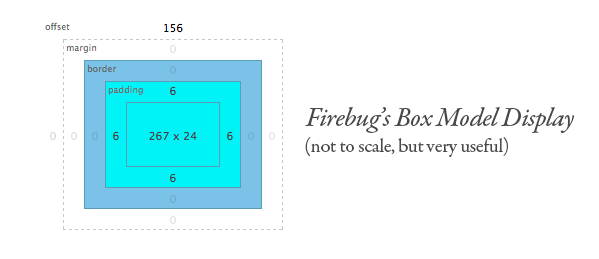

(Week 7) SQL vs NoSQL
As a multi-modal learner, I thought it would be good to include a combination of short videos that help to explain SQL & NoSql, along with text to further drive home the main points.
Here is a video on SQL
Here is a video on No SQL
To understand the debate between SQL & NoSQL, we have to understand the term DBMS, which stands for Database Management System. A DBMS is the software that gives us access to the database (which houses our desired data). Well known examples of DBMS's include Oracle, & MS SQL. In order to access specific data within a database, we use a query language such as SQL or NoSQL. SQL stands for Structered Query Language and is the standard language for dealing with relational databases. Databases that use SQL store data in tables that are accessed using a query written in SQL. However, SQL is not particularrly useful for large volumes of data.
Personally, because I am interested in building an application that will house large volumes of data, I am particularly interested in learning how to use NoSQL (Not only SQL). One of the main benefits of NoSQL, is its ability to respond to a large volume of data. Whereas SQL databases rely on predefined schema.
For more information regarding the differences and uses of SQL & NoSQL, please visit the following:
http://www.thegeekstuff.com/2014/01/sql-vs-nosql-db/
http://www.mongodb.com/nosql-explained
Blog 6: OOP vs Functional Programming

Functional programming takes a problem and decomposes it into a set of functions. Thus a functional program takes on some input and produces some output.
One feature of functional programming is that it discourages functions with side effects that create changes that aren't visible in the final output. Functions without side effects are known as purely functional. In this way, outputs from purely functional programs depend entirely on its input.
Object oriented programming (OOP) manipulates objects. The objective in OOP is with manipulating objects so that they do some thing, whereas other programming is more concerned with the logic required to produce an output.
Blog 5: Ruby Classes
Since Ruby is an object oriented language, it is easy to turn real-world concepts such as people, tickets, & shapes etc. into Ruby objects; more specifically using ruby classes. Ruby classes are a way to model the real world within Ruby. Moreover, a class can be described as a concept wherein an object is a single thing based on that class. For example, say we want to model a square using ruby. We can create class Square and give that class a side length attribute, along with an area method. In modeling a square, we are giving ruby the concept of a Square through our code in class Square, and when we create an instance of Square, we are creating a specific type of square, based on that class. We implement this like so:
class Square
def initialize(side_length)
@side_length = side_length
end
def area
@side_length * @side_length
end
end
Now I can create a specific square, with a unique side length and call the area method defined by the class Square. READ MORE...
Blog 4: Arrays vs. Hashes: What are they? What are they good for?
What is an Array?
An array is simply a list arrangement of objects with no restrictions on type. For instance an array that mixes Integers and Strings is perfectly valid (i.e. array=[1,'one',2,'two']) within Ruby.
Creating an array is fairly simple. You can build an array by placing a set of values within brackets[], i.e.:
More often than not, you will want to name the array so that you can access it later.
- named_array=[1,2,3]
#name_of_array=[object1,object2]
What is a Hash?
A hash, similar to an array, is simply a collection of objects in no particular order.
Typically, hashes are used to represent items and their associated values. For instance, if I wanted to be able to access a list of books by author, I could do so like this: READ MORE...
Blog 3: Why is JavaScript so popular in Web Development?
There are severval reasons as to why Javascript has grown in popularity:
- Adds Interactivity: JS allows users to create dynamic user experiences. This is appealing as websites are created to target specific user groups.
- Fast: JS gets to the end user relatively fast. Since JS code is executed on the user's processor as opposed to the web server, the application is immediately responsive to user input. As an added benefit, this execution on the user's processor saves bandwitdh & limits strain on the web server.
- Easy to implement: Many believe that JS is relatively simple to learn & implement. Javascript is also versatile and can easily be inserted into any web page.
Blog 2: All About Padding, Border, & Margin

Padding
As part of the box model, the padding is defined as the space between the content and the border. There are a few ways to specify padding values within CSS:
- With four values:
- padding: top right bottom left;
- With two values:
- padding: top/bottom right/left;
- With one value:
Border
The border is located between the padding & margin. This property allows you to specify the style & color of the border. To find out more about these properties, please visit: TemplateMonster.com
Margin
The margin is the space directly outside the border. The margin effectively defines how other elements outside the border will relate to the "box" surrounding the content. It is transparent as it does not take on a background color. Similar to the padding, the values for the margin can be defined three different ways.